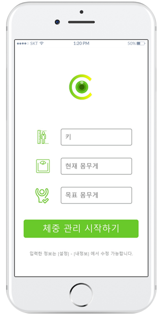
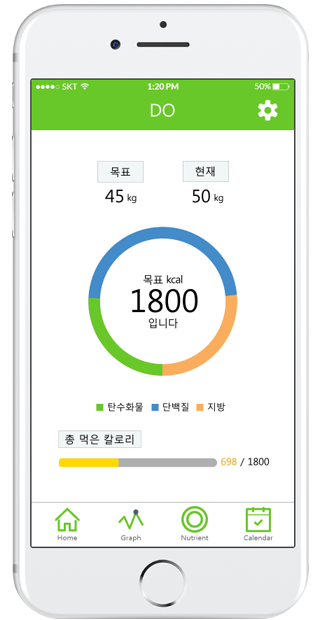
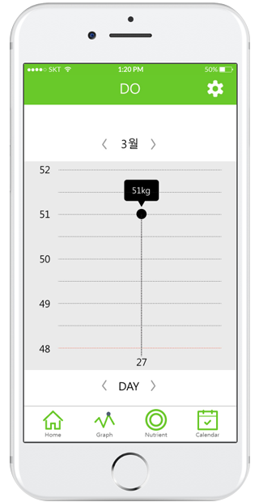
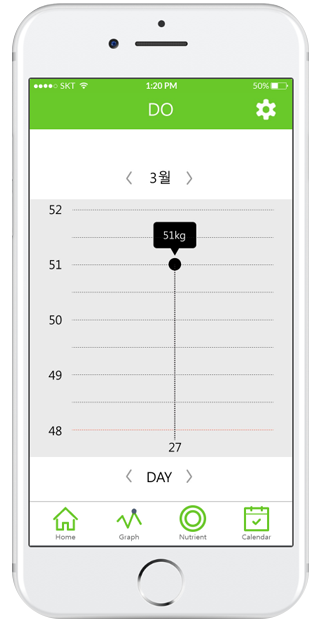
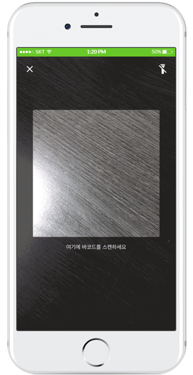

프로젝트 제목
DO 다이어트 어플
참여
3명 참여
기획, UI/UX디자인
사용프로그램
photoshop / ILLUSTLATOR / MARVEL APP
Meister Task, 구글 스프레드시트
경쟁앱분석

- 삼성헬스, 다이어트신, SimpleWeight
| UI | UX | |
|---|---|---|
| 문제점 | 여백없이 컨텐츠 들이 꽉 차 있음 | 필요한 정보만 추리고, 직관적인 아이콘을 사용하여 편리하게 사용하게 함 |
| 해결방안 | 메인 페이지가 따로 없고, 카테고리가 무분별하게 많음 |
사용자가 정보를 한눈에 볼 수 있는 메인화면을 구성 |
기획
- 프로젝트 목적
복잡한 다이어트 어플이 힘들었던 사람들을 위해
간단하게 관리하기 위함
- 타겟
다이어트에 관심이 많은 20대 여성
- 기능
1. 기록하면 그래프로 나타나는 체중변화
2. 사진으로 찍어 알 수 있는 칼로리
과정
- Meister task를 이용해 협업하는 방법에 대해 배울 수 있었다.

- Google 스프레드시트로 회의록 작성
회의록 작성을 내가 하겠다고 맡아서 작성을 했었는데, 작성하면서도 도움이 많이 됐다.
나중에 봤을 때도 어떤 부분에서 어떤 이야기를 나눴었는지,
그리고 자료는 어디에 올려두었는지 등에 대한 자세한 기록을 적어두는 것이 중요했고,
누구나 이 자료를 봤을 때 알 수 있게끔 작성하는게 중요하다고 생각했다.
디자인
- 앱 아이콘 제작

메인색깔을 이용하여 카메라렌즈를 형상화하여 표현하였고,
KCAL중 알파벳 C를 이용하여 칼로리를 표현하였다.
- 메인화면 제작

설정 아이콘을 상단에 고정하고 어떤화면에서든
사용자가 설정을 바꿀 수 있게 했다.
기록한 목표몸무게와 현재 몸무게 비교를
제일 먼저 시선이 가는 위쪽에 위치시켰다.
기록한 목표몸무게에 맞춰 섭취해야하는 영양소를
각각의 색을 정하여 표현하였고,
주목해서 봐야하는 목표에 대한 부분은
크기를 키워 집중시키게 하였다.
현재 진행에 대한 기록도 보여줌으로써
사용자가 보고자 하는 것에 대한 것들을
각각에 맞는 색상을 지정하여 표현하고,
숫자로 한번 더 강조 하였다.
아이콘 뿐만 아니라 이름을 붙여
정보를 쉽게 확인 할 수 있게 하였다.
실행
- 회원가입

UI) 누르는 아이콘의 범위를
누르기 편하게 적당한 범위와 간격을 두었음
UX) 번거로운 가입절차를 없애고,
가지고 있는 아이디를 활용해
가입해서 사용을 유도함
- 기본정보 기입
UI) 아이콘을 너무 굵지도 얇지도 않게
눈에 잘 띌 수 있도록 작업함
UX) 기입해야 되는 부분에 대한 것을
아이콘으로 한번 더 꾸밈과 강조를 줌
- 메인화면
UI) 크기조절과 색상을 주어 각각의 요소를
더 눈에 잘 띄게끔 작업함
UX) 알고싶은 정보를 한눈에 보이게
작업을 하였고, 하단메뉴도 많지않게
4개로 작업을 하였고,
설정도 언제든지 바꿀 수 있게 상단에 고정함
- 메뉴1 : 그래프
 

UI) 블랙과 화이트 색상을 이용해 강조를 하였음
UX) 한주, 하루를 볼 수 있게끔 작업하였고,
그래프의 간격이 너무 작지도 않고 크지도 않게
눈에 잘 띄게끔 작업함
- 메뉴2 : 사진촬영 / 바코드촬영

UI) 메인화면에서 보여준 색상과 동일하게
색상표현으로 나타냄
UX) 사진을 찍으면 영양소의 결과가 뜨게끔 하고,
주요 요소들은 그래프로 좀 더 눈에 띄게,
상세결과들은 표로 눈에 들어오기 쉽게 디자인함
- 메뉴3 : 달력


UI) 메인화면에서 보여준 색상과 동일하게
색상표현으로 나타냄
UX) 날짜를 클릭하면 하루의 정보들을 보여주고,
먼저 주요정보를, 더 원하는 정보는
더보기를 이용해 정보를 볼 수 있도록 작업함
느낀점
여자라면 다이어트와 몸 관리에 대한 신경을 안써본 사람은 없다.
그만큼 다이어트 어플도 정말 많고, 기능도 다양하다.
기능에 대한 이야기를 하다가 단순하게 사용할 수 있는게 없을까 하는
방향성으로 맞춰 기획하여 진행했다.
건강과 다이어트에 어울리는 색상은 무엇일까,
사용자가 어떤 아이콘을 보고, 어떤시선으로 앱을 켜고 실행을 시킬까 생각하며
작업했던 것이 쉬운 것 하나 없었지만
조장을 맡고, 조원들과 이야기 하는 방법부터
작업을 하며 의견을 맞춰가고 하나의 방향성을 갖고 결과물을 잘 만들어 낸 것이
일을 하는 방법 등 간접경험을 할 수 있어서 좋았다.